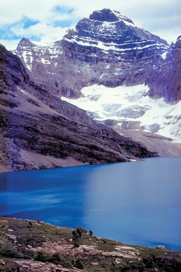

Module 4—Properties of Solutions
Lesson 1—Classifying Matter and Solutions
 Get Focused
Get Focused

© 2007 Jupiterimages Corporation
Do you know where your drinking water comes from? Glacier meltwater in the Rocky Mountains is the source of all rivers in Alberta. The Bow River, which flows through Calgary, starts at the Bow Glacier in Banff National Park. The North Saskatchewan River, which flows through Edmonton, starts at the Saskatchewan Glacier in the Columbia Icefield.
Both Calgary and Edmonton, as well as many other communities in Alberta, use river water as drinking water. However, before the river water arrives at people’s homes, it undergoes inspection and treatment to make sure it is suitable for human consumption.
How do you know if your drinking water is safe? The Guidelines for Canadian Drinking Water Quality, published by Health Canada, gives maximum upper limits for the concentration of dangerous substances in the water supply. All drinking water must meet specific requirements in the following areas:
-
aesthetic quality (clarity and colour)
-
microbiological and chemical contamination
The inspection and treatment of water is a very complex process, and it requires a thorough understanding of solutions. In this lesson you will begin your study of solutions by learning how scientists classify matter and solutions.
Essential Questions
-
What is a solution?
-
What kind of mixture is a solution?
 Module 4: Lesson 1 Assignment
Module 4: Lesson 1 Assignment
You will complete the Module 4 Assignment 1 in this lesson.
Remember that the questions that are not marked by the teacher provide you with the practice and feedback that you need to successfully complete this course. You should respond to all the questions and place those answers in your course folder.